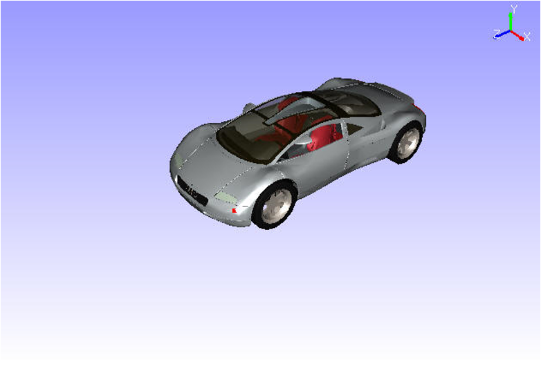

Set Rotation Center
The Set Rotation Center option helps users to set a rotation center for the model by picking a point in the model.
Steps to Set Rotation Center
Click Display | Set Rotation Center or use the shortcut key, Alt + Mouse Left Button

The current rotation center of the model is displayed in red.
Click on any other point on the model to be the new rotation center.

Now rotate the model and notice the changes.

Reset
Right click to open the context menu and click Reset to set the model centre as rotation center. Reset will reset not only the rotation center, but also all viewing functionality parameters to defaults.
Note:
VCollab Pro provides independent rotation about model bounding center for merged models. Click here for more details.